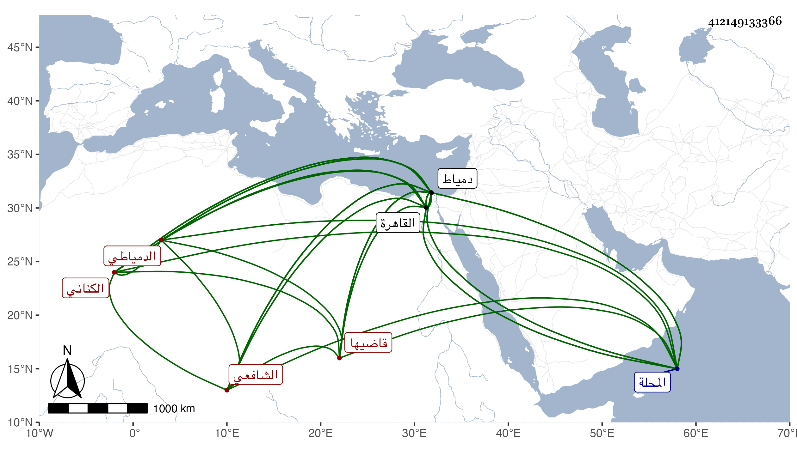

0902Sakhawi.DawLamic.ITO20230111-ara1.EIS1600.412149133366
Biography ID: 412149133366
36
علي بن محمد بن محمد بن محمد بن سالم بن موسى بن سالم بن أبي المكارم بن إسماعيل بن عبد السلام إمام الدين بن المحب بن الصدر بن الجمال الكناني الدمياطي قاضيها وابن قضاتها الشافعي ويعرف بابن العميد وهو لقب جده الأعلى عبد السلام وكان قاضي دمياط وولي عدة من آباء إمام الدين القضاء . ولد في ثالث رمضان سنة إحدى وخمسين وسبعمائة وجلس بالقاهرة مع الموقعين مدة حتى برع في الشروط والسجلات وكتب التوقيع وناب بدمياط وغيره من الأعمال ثم استقل به في جمادى الأولى سنة ثلاث وتسعين وكان يصرف ثم يعاد وناب في الحكم بالقاهرة بل ولي قضاء المحلة ومات على قضائها وهو بدمياط في مستهل شعبان سنة ست وعشرين عن خمس وسبعين . كره شيخنا في أنبائه باختصار وكان مع قلة علمه بشوشا سيوسا لينا جميل العشرة صاحب دهاء وخبرة بأمور الدنيا له ثراء فيه سماح . ذكره المقريزي في عقوده وحكى عنه أنه أخبره أنه تنكر ما بين والده والمحب بن فاتح الأسمر لأنه بلغه عنه قوله أنا ما أجيء لزيارة المحب إنما أجيء لزيارة أبيه بحيث تهاجرا بعد الصداقة ثم ابتدأ والده المحب بالمصالحة وجاءه لسكنه بجامع دمياط فامتنع فمضى لأبيه الشيخ فاتح فجاءه المحب إليه وعانقه وأخبره بأنه رأى والده في النوم وهو يقول : ليس هذا من الإنصاف أن يأتيك وتعتذر إليه ولا تقبله وينبغي أن تذهب إليه وتستغفر له فتباكيا وعادا لصحبتهما ، قال المقريزي : وقلت له عن شيء ليفعله فقال : ما أحسنني لو أمكنني .
